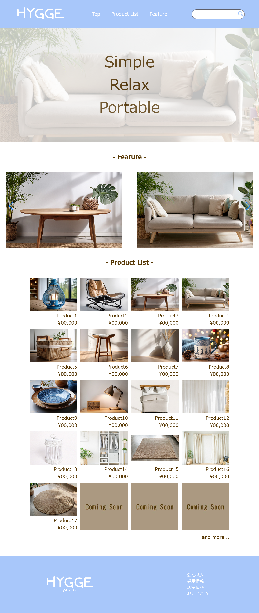

What i made

ポスター
 【授業課題（自由テーマ）】
【授業課題（自由テーマ）】
初めて猫を飼う方向けのチラシ
作成期間：6時間
使用ソフト：Illustrator
ターゲット：全世代の男女
制作意図：
ターゲットが子供から大人まで幅広かったため、子供でも
読めるように簡単な言葉遣いをえらびました。
また、一目でわかるようにイラストも使用しました。
色も優しさが伝わるようにピンクをメインにしました。
 【自由課題】
【自由課題】
架空アウトドア用品店主催のBBQイベントのチラシ
作成期間：6時間
使用ソフト：Illustrator
ターゲット：全世代の男女
制作意図：
名刺
 【自主制作】
【自主制作】
架空旅行会社の名刺
作成期間：2時間
使用ソフト：Illustrator
ターゲット：30～40代の男女
制作意図：こだわった点は、右下に配置した地球をイメージした四半球に有名観光地のアイコンをあわせたデザインです。
また、上部に配置した飛行機が飛んでいる線を入れることにより引き締まった印象に仕上げました。
パンフレット・リーフレット
 【授業課題】
【授業課題】
新卒者向け会社紹介用のリーフレット
作成期間：12時間
使用ソフト：Illustrator,Photoshop
ターゲット：コーヒーに興味がある就職活動中の新卒世代の男女
制作意図：他社と比較するため、持ち帰って確認できる資料がほしいとのことだったので表面は
外から見た会社について、裏面は社内についての記載にまとめました。
 【授業課題（自由テーマ）】
【授業課題（自由テーマ）】
アロマの利用方法についてのリーフレット
作成期間：6時間
使用ソフト：Illustrator
ターゲット：20～60代の男女
制作意図：これからアロマを使用したい方向けのパンフレットを作成しました。
アロマということなので、癒しやリラックスをイメージし紫色をメインに使用してデザインしました。
使用方法と、はじめての方が使いやすいアロマを紹介しました。
ロゴ
 【自主制作】
【自主制作】
旅行会社ロゴ
作成期間：2時間
使用ソフト：Illustrator
ターゲット：30～40代の男女
制作意図：会社名のCarlyTravelの頭文字のCとTをイメージし、
さらに旅行に関わる飛行機とTの文字を掛けたデザインにしました。
カラーは代表の好きな黄色から着想し、落ち着きのあるゴールドにしました。
ウェブサイト

【授業課題】
架空家具屋のランディングページ
作成期間：2時間
使用ソフト：Illustrator,Photoshop,VScode,HTML,CSS
ターゲット：20～60 代の男女
制作意図：一押し商品を目立たせたいとのご要望だったためファーストビューの次にFeature listを作成し、横に
スクロールしながら、一押し商品を見ていただけるようにデザインしました。コーポレートカラーの水色をアクセントカラーとして使用しました。
 【自主制作】
【自主制作】
架空旅行会社のホームページ
作成期間：24時間
使用ソフト：Illustrator,Photoshop,VScode,HTML,CSS
ターゲット：30～40代の男女
制作意図：旅行会社という特性上たくさんの写真を使用するため写真以外の所はシンプルに仕上げました。
また代表のこだわりが強い会社の為利用する方が安心して利用できるように会社および代表の想いを紹介するページを設けました。
 【授業課題】
【授業課題】
自分のポートフォリオサイト
作成期間：24時間
使用ソフト：Illustrator,Photoshop,VScode,HTML,CSS
ターゲット：採用担当者・クライアント
制作意図：余計な情報は入れずに、訪問する方が見やすいようデザインしました。
また自分らしさが伝わるよう飼い猫も登場させました。
ベース：白、メイン：ピンク、アクセント：茶色とし、安心感のある色づかいを目指しました。

{kind=link}